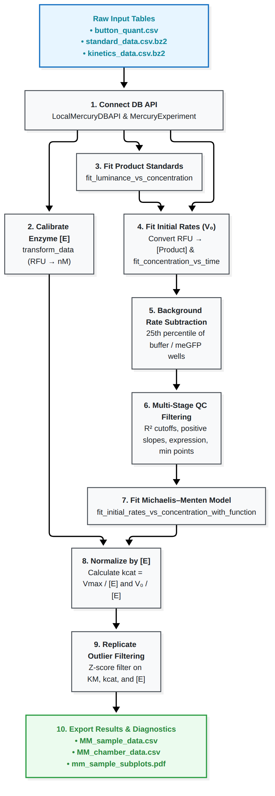

Michaelis-Menten Analysis & QC Walkthrough
This guide provides a comprehensive, step-by-step walkthrough of the standard enzyme kinetics analysis pipeline in Mercury, based on the template notebook htbam_notebooks/analysis_mm.ipynb.
It starts from quantified fluorescence tables and walks all the way through enzyme calibration, product calibration, initial rate fitting, background rate subtraction, quality-control filtering, Michaelis–Menten model fitting, replicate aggregation, and publication-ready diagnostic exports.
Overview of the Analysis Pipeline

1. Setup & Database Connection
Before starting your analysis, copy the template notebook so your original template stays clean:
cp htbam_notebooks/analysis_mm.ipynb my_experiment_analysis.ipynb
In your notebook or script, load the required modules and connect to your quantified data tables via LocalMercuryDBAPI:
from pathlib import Path
from mercury.db_api.mercury_db_api import LocalMercuryDBAPI
from mercury.analysis.experiment import MercuryExperiment
from mercury.analysis import plot
from mercury.db_api.units import units
# Calibration constant for eGFP fluorescence (RFU to nM)
EGFP_SLOPE = (91900.03 / 9) * (units.RFU / units.nM)
# Path to the directory containing your quantified CSV/bz2 tables
root = Path('./your_data_folder/')
db_conn = LocalMercuryDBAPI(
# Product standard curve measurements
standard_curve_data_path=str(root / 'standard_data.csv.bz2'),
standard_name="NADPH",
standard_substrate="NADPH",
standard_units=units.uM,
standard_concentration_col="concentration", # Must match the column in standard CSV
# Kinetic reaction progress measurements
kinetic_data_path=str(root / 'kinetics_data.csv.bz2'),
kinetic_name="ADP",
kinetic_substrate="ADP",
kinetic_units=units.uM,
kinetic_concentration_col="adp_conc", # Must match substrate column in kinetics CSV
# Timing and protein expression measurements
time_units=units.s,
button_quant_data_path=str(root / 'button_quant.csv')
)
mercury_experiment = MercuryExperiment(db_conn)
print("Loaded runs:", db_conn.get_run_names())
# Expected: ['NADPH', 'ADP', 'button_quant']
2. Enzyme Quantification
Convert surface-bound fluorescence intensity under the button ROI into molar enzyme concentration [E]:
from mercury.analysis.transform import transform_data
button_concentrations = transform_data(
data_objs=[mercury_experiment.get_run('button_quant')],
expr='(a_luminance / slope)',
expression_vars={'slope': EGFP_SLOPE},
output_name='concentration'
)
mercury_experiment.set_run('enzyme_concentrations', button_concentrations)
# Interactively inspect enzyme expression across the chip:
plot.plot_enzyme_concentration_chip(mercury_experiment, analysis_name='enzyme_concentrations')
3. Product Standard Curve Calibration
Fit calibration curves for each chamber to convert fluorescence units (RFU) into micromolar product concentration:
from mercury.analysis.fit import fit_luminance_vs_concentration
standard_experiment_data = mercury_experiment.get_run('NADPH')
standard_fits = fit_luminance_vs_concentration(standard_experiment_data)
mercury_experiment.set_run('NADPH_standard', standard_fits)
# Inspect standard curve fits across chambers
plot.plot_standard_curve_chip(mercury_experiment, 'NADPH_standard', 'NADPH')
Tip - Masking bad standard points: If a particular standard concentration had a pipetting or imaging glitch, you can mask it using
mercury.analysis.filter.make_custom_maskbefore callingfit_luminance_vs_concentration.
4. Initial Velocity (V0) Fitting
Using the fitted calibration lines, convert time-course kinetics fluorescence into product concentrations, then fit the linear initial velocity slope V0:
from mercury.analysis.fit import fit_concentration_vs_time
# 1. Convert RFU to product concentration per chamber: [P] = (RFU - intercept) / slope
product_concentrations = transform_data(
data_objs=[mercury_experiment.get_run('ADP'), mercury_experiment.get_run('NADPH_standard')],
expr='(a.luminance - b.intercept) / b.slope',
output_name='concentration'
)
mercury_experiment.set_run('kinetics_ADP_conc', product_concentrations)
# 2. Fit linear initial rates
kinetics_concentrations = mercury_experiment.get_run('kinetics_ADP_conc')
kinetics_fits, fit_points_mask = fit_concentration_vs_time(
kinetics_concentrations,
start_timepoint=1, # Skip initial mixing/settling artifacts
end_timepoint=10, # Upper bound of initial linear region
max_reaction_percent=10 # Keep points with <= 10% substrate consumed
)
mercury_experiment.set_run('kinetics_ADP_conc_fits', kinetics_fits)
mercury_experiment.set_run('fit_points_mask', fit_points_mask)
# Inspect initial rates on the chip
plot.plot_initial_rates_chip(
mercury_experiment,
analysis_name='kinetics_ADP_conc_fits',
experiment_name='kinetics_ADP_conc',
fit_points_mask='fit_points_mask'
)
5. Non-Enzymatic Background Rate Subtraction
In many assays, substrate degrades spontaneously or undergoes non-enzymatic reaction. We estimate this background rate from negative-control chambers (e.g. meGFP or buffer wells) and subtract it from all active chambers:
from mercury.analysis.filter import filter_by_sample_id
# 1. Isolate control/buffer chambers
buffer_mask = filter_by_sample_id(kinetics_fits, sample_ids=['meGFP'])
mercury_experiment.set_run('buffer_mask', buffer_mask)
mercury_experiment.apply_mask(
run_name='kinetics_ADP_conc_fits',
dep_variables=['slope', 'intercept', 'r_squared'],
save_as='buffer_wells',
mask_names=['buffer_mask']
)
# 2. Compute the 25th percentile of control slopes (robust against outliers)
buffer_wells = mercury_experiment.get_run('buffer_wells')
buffer_wells_lower_quartile = transform_data(
data_objs=[buffer_wells],
expr='np.nanpercentile(a.device.slope, 25, axis=1)',
output_name='slope_lower_quartile'
)
mercury_experiment.set_run('buffer_wells_lower_quartile', buffer_wells_lower_quartile)
# 3. Subtract background rate from every chamber
corrected_initial_rates = transform_data(
data_objs=[
mercury_experiment.get_run('kinetics_ADP_conc_fits'),
mercury_experiment.get_run('buffer_wells_lower_quartile')
],
expr='(a.chamber.slope - b.chamber.slope_lower_quartile)',
output_name='slope',
keep_existing=True
)
mercury_experiment.set_run('kinetics_ADP_conc_fits_bgsub', corrected_initial_rates)
6. Multi-Stage Quality-Control Filtering
Ensure low-quality or aberrant chambers do not corrupt kinetic fits:
from mercury.analysis.filter import (
filter_initial_rates_r2_cutoff,
filter_initial_rates_positive_cutoff,
filter_standard_curve_r2_cutoff,
filter_expression_cutoff,
filter_number_concentrations,
)
kinetics_fits_bgsub = mercury_experiment.get_run('kinetics_ADP_conc_fits_bgsub')
# Build individual filter masks:
initial_rates_r2_mask = filter_initial_rates_r2_cutoff(kinetics_fits_bgsub, r2_cutoff=0.9)
initial_rates_positive_mask = filter_initial_rates_positive_cutoff(kinetics_fits_bgsub)
standard_curve_r2_mask = filter_standard_curve_r2_cutoff(standard_fits, kinetics_fits_bgsub, r2_cutoff=0.9)
expression_mask = filter_expression_cutoff(button_concentrations, kinetics_fits_bgsub, expression_cutoff=1)
mercury_experiment.set_run('initial_rates_r2_mask', initial_rates_r2_mask)
mercury_experiment.set_run('initial_rates_positive_mask', initial_rates_positive_mask)
mercury_experiment.set_run('standard_curve_r2_mask', standard_curve_r2_mask)
mercury_experiment.set_run('expression_mask', expression_mask)
# Preview any mask before applying:
plot.plot_mask_chip(mercury_experiment, mask_name='initial_rates_r2_mask')
# Apply rate-level filters
mercury_experiment.apply_mask(
run_name='kinetics_ADP_conc_fits_bgsub',
dep_variables=['slope', 'intercept'],
save_as='kinetics_ADP_conc_fits_masked',
mask_names=['initial_rates_r2_mask', 'initial_rates_positive_mask', 'standard_curve_r2_mask', 'expression_mask']
)
# Enforce minimum concentration requirement (e.g. at least 5 valid concentrations):
kinetics_fits_masked = mercury_experiment.get_run('kinetics_ADP_conc_fits_masked')
number_initial_rates_mask = filter_number_concentrations(kinetics_fits_masked, min_concentrations=5, var_to_check='slope')
mercury_experiment.set_run('number_initial_rates_mask', number_initial_rates_mask)
mercury_experiment.apply_mask(
run_name='kinetics_ADP_conc_fits_masked',
dep_variables=['slope', 'intercept', 'r_squared'],
save_as='kinetics_ADP_conc_fits_masked',
mask_names=['number_initial_rates_mask']
)
7. Michaelis–Menten Model Fitting
Fit initial rates across substrate concentrations to the Michaelis–Menten equation:
V0 = (Vmax · [S]) / (KM + [S])
from mercury.analysis.fit import fit_initial_rates_vs_concentration_with_function, mm_model
from mercury.analysis.filter import filter_r2_cutoff, filter_number_replicates
kinetics_fits_masked = mercury_experiment.get_run('kinetics_ADP_conc_fits_masked')
MM_fits, MM_pred_data = fit_initial_rates_vs_concentration_with_function(
data=kinetics_fits_masked,
model_func=mm_model
)
mercury_experiment.set_run('kinetics_ADP_MM_fits', MM_fits)
mercury_experiment.set_run('kinetics_ADP_MM_pred_data', MM_pred_data)
# Filter fits by goodness-of-fit (R^2 >= 0.8) and minimum replicate count (>= 3):
MM_fits = mercury_experiment.get_run('kinetics_ADP_MM_fits')
MM_fits_mask = filter_r2_cutoff(MM_fits, r2_cutoff=0.8)
MM_fits_replicate_mask = filter_number_replicates(MM_fits, min_replicates=3, var_to_check='K_m')
mercury_experiment.set_run('MM_R2_mask', MM_fits_mask)
mercury_experiment.set_run('MM_replicate_mask', MM_fits_replicate_mask)
mercury_experiment.apply_mask(
run_name='kinetics_ADP_MM_fits',
dep_variables=['v_max', 'K_m', 'r_squared'],
save_as='kinetics_ADP_MM_fits_masked',
mask_names=['MM_R2_mask', 'MM_replicate_mask']
)
# Plot Michaelis-Menten fits on the chip
plot.plot_MM_chip(
experiment=mercury_experiment,
analysis_name='kinetics_ADP_conc_fits_masked',
model_fit_name='kinetics_ADP_MM_fits_masked',
model_pred_data_name='kinetics_ADP_MM_pred_data'
)
8. Normalizing by [E] for kcat and V0 / [E]
Calculate catalytic rate constants (kcat = Vmax / [E]) and normalized velocities:
enzyme_concentrations = mercury_experiment.get_run("enzyme_concentrations")
masked_slopes_vs_conc = mercury_experiment.get_run("kinetics_ADP_conc_fits_masked")
masked_fits = mercury_experiment.get_run("kinetics_ADP_MM_fits_masked")
pred_data = mercury_experiment.get_run("kinetics_ADP_MM_pred_data")
# 1. Normalize initial rates: V_0 / [E]
masked_V0_div_E_vs_conc = transform_data(
data_objs=[masked_slopes_vs_conc, enzyme_concentrations],
expr='a_slope / b_concentration',
output_name='V0_div_E'
)
# 2. Normalize Vmax to get kcat: kcat = Vmax / [E]
masked_fits_with_kcat = transform_data(
data_objs=[masked_fits, enzyme_concentrations],
expr='a_v_max / b_concentration',
output_name='kcat',
keep_existing=True
)
# 3. Normalize predicted model curves:
pred_data_div_E = transform_data(
data_objs=[pred_data, enzyme_concentrations],
expr='a_y_pred / b_concentration',
output_name='pred_V0_div_E'
)
mercury_experiment.set_run('masked_V0_div_E_vs_conc', masked_V0_div_E_vs_conc)
mercury_experiment.set_run('masked_fits_with_kcat', masked_fits_with_kcat)
mercury_experiment.set_run('pred_data_div_E', pred_data_div_E)
9. Replicate Outlier Filtering (Z-Score Filtering)
Biological microfluidic chips contain replicates of each variant across different chambers. We filter out chambers whose KM, kcat, or [E] deviates significantly (> 1.5 standard deviations) from the replicate mean:
z_score_threshold = 1.5
# Mask chambers with aberrant KM
MM_outlier_mask_KM = transform_data(
data_objs=[mercury_experiment.get_run('masked_fits_with_kcat')],
expr='~(np.abs(a.chamber.K_m - np.nanmean(a.sample.K_m)) > z_score_threshold * np.nanstd(a.sample.K_m))',
expression_vars={'z_score_threshold': z_score_threshold},
output_name='mask'
)
# Mask chambers with aberrant kcat
MM_outlier_mask_kcat = transform_data(
data_objs=[mercury_experiment.get_run('masked_fits_with_kcat')],
expr='~(np.abs(a.chamber.kcat - np.nanmean(a.sample.kcat)) > z_score_threshold * np.nanstd(a.sample.kcat))',
expression_vars={'z_score_threshold': z_score_threshold},
output_name='mask'
)
# Mask chambers with aberrant protein loading
MM_outlier_mask_expression = transform_data(
data_objs=[mercury_experiment.get_run('enzyme_concentrations')],
expr='~(np.abs(a.chamber.concentration - np.nanmean(a.sample.concentration)) > z_score_threshold * np.nanstd(a.sample.concentration))',
expression_vars={'z_score_threshold': z_score_threshold},
output_name='mask'
)
# Combine masks with logical AND
MM_outlier_mask = transform_data(
data_objs=[MM_outlier_mask_KM, MM_outlier_mask_kcat, MM_outlier_mask_expression],
expr='a.mask.magnitude & b.mask.magnitude & c.mask.magnitude',
output_name='mask'
)
mercury_experiment.set_run('MM_outlier_mask', MM_outlier_mask)
# Apply outlier mask
mercury_experiment.apply_mask(
run_name='masked_fits_with_kcat',
dep_variables=['v_max', 'K_m', 'r_squared', 'kcat'],
save_as='masked_fits_with_kcat_filtered',
mask_names=['MM_outlier_mask']
)
mercury_experiment.apply_mask(
run_name='masked_V0_div_E_vs_conc',
dep_variables=['V0_div_E'],
save_as='masked_V0_div_E_vs_conc_filtered',
mask_names=['MM_outlier_mask']
)
# Plot final filtered V0/[E] vs concentration:
plot.plot_MM_div_E_chip(
experiment=mercury_experiment,
analysis_name='masked_V0_div_E_vs_conc_filtered',
model_fit_name='masked_fits_with_kcat_filtered',
dep_var_name='V0_div_E',
model_pred_data_name='pred_data_div_E'
)
10. Exporting Results & Diagnostics
Export summary tables and publication-ready diagnostic plots:
# 1. Export Chamber-Level Results (one row per chamber)
mercury_experiment.export_MM_chamber_data(
run_name='masked_fits_with_kcat_filtered',
enzyme_concentration_run_name='enzyme_concentrations',
file_name='MM_chamber_data.csv'
)
# 2. Export Sample-Level Summaries (means, standard deviations, and replicate counts per variant)
mercury_experiment.export_MM_sample_data(
run_name='masked_fits_with_kcat_filtered',
enzyme_concentration_run_name='enzyme_concentrations',
file_name='MM_sample_data.csv'
)
# 3. Export Sample Subplots PDF
# Generates a multipage PDF showing Michaelis-Menten curves, replicate error bars, and parameter envelopes
mercury_experiment.export_mm_subplots_by_sample(
analysis_name='masked_V0_div_E_vs_conc_filtered',
model_fit_name='masked_fits_with_kcat_filtered',
dep_var_label='V0_div_E',
export_path='mm_sample_subplots.pdf'
)
# 4. (Optional) Full End-to-End Visual Summary
# Generates comprehensive diagnostics for each sample showing raw images, standard curves, initial rates, and fits
# mercury_experiment.export_end_to_end_summary_by_sample(
# export_dir='./all_samples_visual_summary',
# button_quant_csv=str(root / 'button_quant.csv'),
# standard_curve_csv=str(root / 'standard_data.csv.bz2'),
# kinetics_csv=str(root / 'kinetics_data.csv.bz2')
# )
Output Files Summary
| File | Level | Description |
|---|---|---|
MM_sample_data.csv |
Sample | Aggregated kcat, KM, [E], fit R2, and replicate count per variant |
MM_chamber_data.csv |
Chamber | Individual chamber fit parameters, standard errors, and outlier status |
mm_sample_subplots.pdf |
Visual | Subplot grid showing mean rates, standard error bars, and Michaelis–Menten fit curves |
all_samples_visual_summary/ |
Diagnostic | Multi-panel visual summaries showing microscope stamp images, standard curves, and rate slopes |